Guild menus: one look (cc-P177)
Mockups of the proposed shared guild menu, GuildMenuGump (server\customizations\GuildMenuGump.cs), drawn from the gump entries the server builds, with EA's gump and item art, unifont1 glyphs and hues.mul. The striped backdrop shows the window is opaque. No menu uses the template yet.
For Chase: Approve this look, or say what to change.
The template: four guilds, the League and a guild book
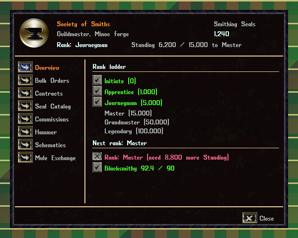
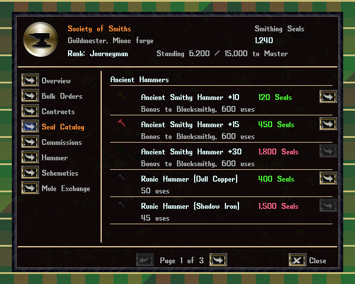
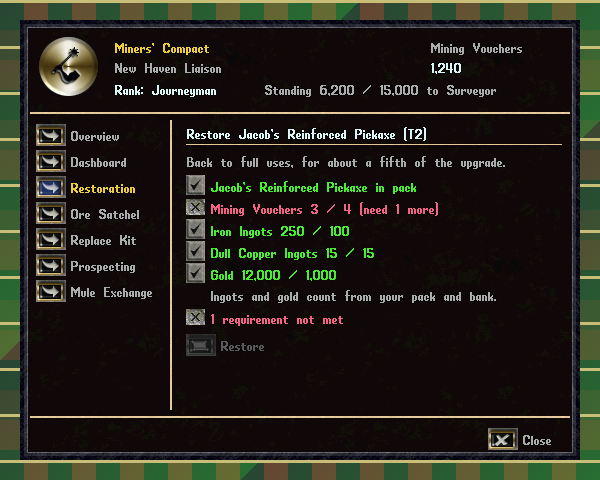
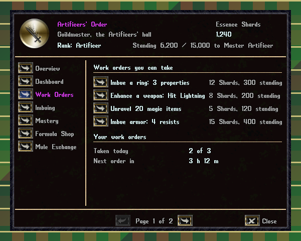
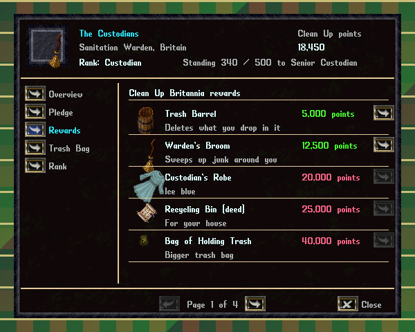
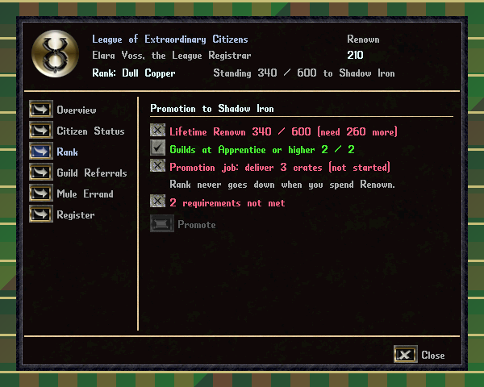
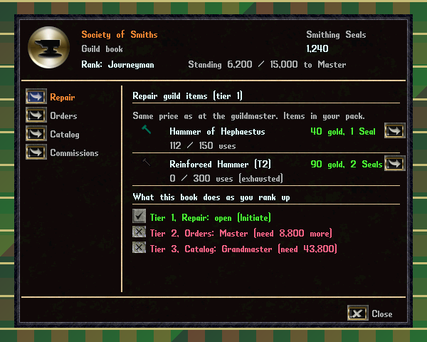
Every guild's crest and accent
Fourteen guilds use the client's gold guild medallions (5545 to 5592). The Custodians and the Keepers draw a placeholder. The Artificers, the Alembic and the League use stand-ins. art-requests.md asks the art lane for those five.
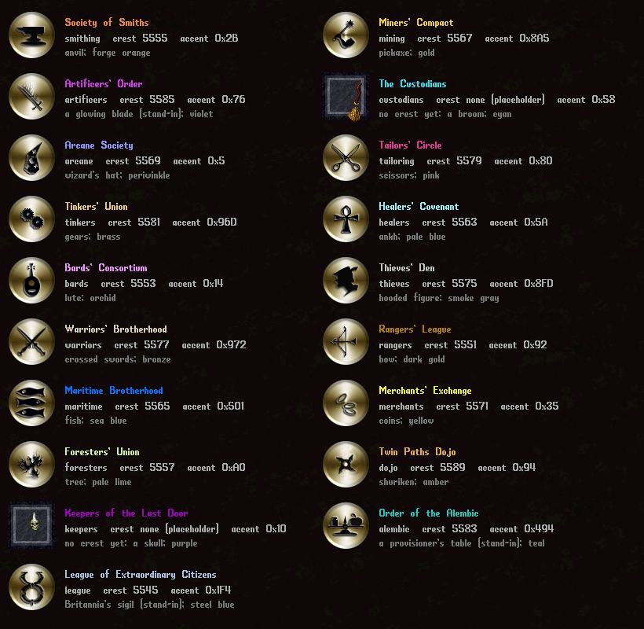
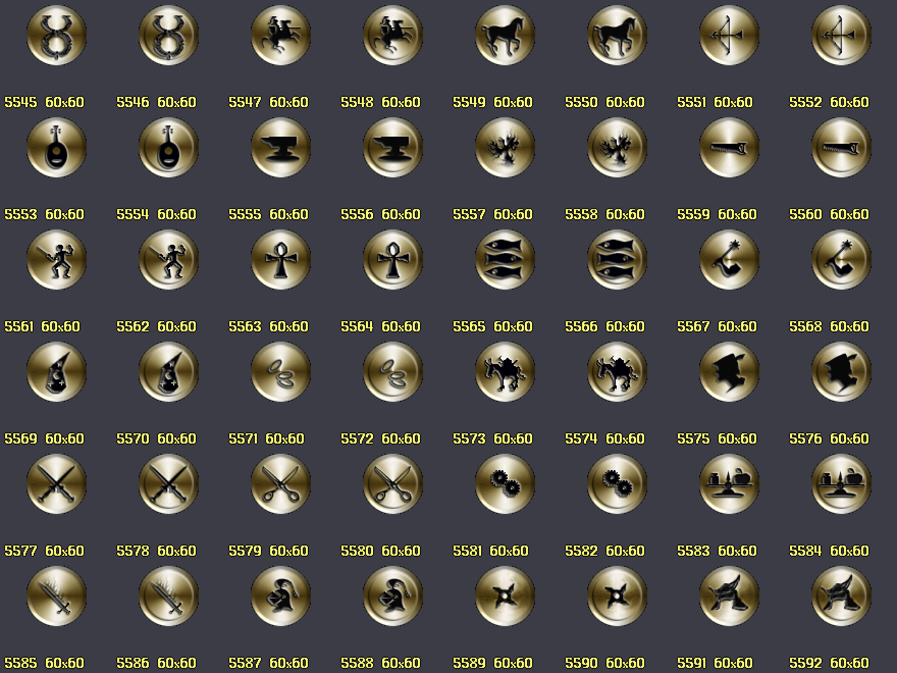
Survey: today's guild menus
Every guild menu as a Journeyman member sees it (dumped by GuildMenuTemplateVerification.DumpsTodaysGuildMenus). They all share the 9270 frame and the 9304 rules. They differ in size, in a see-through or solid inside, in header layout, in heading hue (1153 white, or 1154, which TazUO draws green), in button art (4005, 4011, 4014, 4017 and 4023 in different roles) and in how they show requirements.
| Menu | Source (server\customizations) | Size | Inside | Buttons | Label hues | HTML colours | cc-P169 lines |
|---|---|---|---|---|---|---|---|
| Guild Directory ([guild, the board) | ClusterFGuildSystem.cs:879 | 760x540 | alpha (see-through) | 4005, 4011, 4014 | 37, 53, 999, 1154 | AAAAAA | no |
| Hall page: every guild without its own menu (Tailors' Circle here) | ClusterFGuildSystem.cs:1052 | 520x400 | alpha (see-through) | 4011, 4017 | 37, 68, 999, 1154 | AAAAAA, DDDDDD | no |
| Hall page: Thieves' Den | ClusterFGuildSystem.cs:1052 | 520x400 | alpha (see-through) | 4011, 4017 | 37, 999, 1154 | AAAAAA, DDDDDD | no |
| Hall page: Order of the Alembic | ClusterFGuildSystem.cs:1052 | 520x400 | alpha (see-through) | 4011, 4017 | 37, 999, 1154 | AAAAAA, DDDDDD | no |
| New Haven welcome | ClusterFGuildStarterPath.cs:795 | 420x260 | alpha (see-through) | 4005, 4017 | 999, 1154 | DDDDDD | no |
| Starter items (any guild) | ClusterFGuildStarterPath.cs:845 | 560x192 | alpha (see-through) | 4014, 4017 | 999, 1154 | no | |
| Society of Smiths guildmaster | SmithGuildmasterGump.cs:53 | 380x662 | alpha (see-through) | 4005 | 68, 990, 999, 1153, 1154 | AAAAAA | no |
| What are Smithing Seals? | SmithGuildmasterGump.cs:371 | 360x260 | alpha (see-through) | 1153 | CCCCCC | no | |
| Smith Seal catalog | SmithSealCatalogGump.cs:138 | 500x440 | alpha (see-through) | 4005, 4006, 4023 | 68, 990, 999, 1153 | no | |
| Smith commissions | SmithCommissionGump.cs:40 | 420x240 | alpha (see-through) | 4005 | 37, 999, 1153 | 666666 | no |
| Smith bulk order choice | SmithBulkOrderChoiceGump.cs:41 | 400x290 | solid 2624 | 211, 4005, 4017 | 946, 999, 1153, 1154 | no | |
| Smithing Guild Book (remote book) | SmithGuildBook.cs:162 | 500x620 | alpha (see-through) | 211, 4005 | 37, 68, 946, 999, 1153, 1154 | 666666 | no |
| Hammer of Hephaestus restore and upgrade | HammerOfHephaestus.cs:1118 | 460x616 | solid 2624 | 4014, 4023 | 34, 68, 946, 999, 1153 | yes | |
| Hammer of Hephaestus familiarity | HammerOfHephaestus.cs:965 | 480x584 | alpha (see-through) | 4023 | 999, 1153, 1154, 1638 | 444444, C8A000 | no |
| Miners' Compact liaison, main | MinersCompactLiaisonGump.cs:102 | 440x420 | solid 2624 | 4011, 4023 | 999, 1153 | no | |
| Miners' Compact member dashboard | MinersCompactLiaisonGump.cs:102 | 440x420 | solid 2624 | 4011, 4014, 4023 | 999, 1153 | 888888, AAAAAA, FFD700 | no |
| Miners' Compact restoration (nothing to restore) | MinersCompactLiaisonGump.cs:102 | 440x420 | solid 2624 | 4014, 4023 | 999, 1153 | no | |
| Prospector's Logbook (ore log book) | ProspectorsLogbookGump.cs:70 | 540x510 | alpha (see-through) | 4023 | 34, 999, 1154 | no | |
| Survey Archivist | SurveyArchivistGump.cs:66 | 440x420 | alpha (see-through) | 4023 | 999, 1154 | 888888, AAAAAA | no |
| Jacob's Pickaxe T2 upgrade (T3 to T5 the same) | JacobsReinforcedPickaxe.cs:223 | 440x370 | solid 2624 | 4014, 4023 | 34, 68, 946, 999, 1153 | yes | |
| Artificers' Order guildmaster | ArtificersGuildmasterGump.cs:33 | 460x440 | alpha (see-through) | 4011, 4023 | 999, 1153 | no | |
| Artificers' member dashboard | ArtificersGuildmasterGump.cs:33 | 460x440 | alpha (see-through) | 4011, 4014, 4023 | 999, 1153, 1154 | 888888, AAAAAA, CCCCCC, FFD700 | no |
| Imbuing table | ArtificersImbueGump.cs:878 | 530x570 | alpha (see-through) | 4011, 4023 | 33, 946, 999, 1153, 1154 | no | |
| Essence Satchel mastery | ArtificersSatchel.cs:173 | 560x540 | alpha (see-through) | 4005, 4023 | 68, 946, 999, 1153 | no | |
| Artificer work orders | ArtificerWorkOrderSystem.cs:532 | 580x520 | alpha (see-through) | 4023 | 946, 1153 | no | |
| Formula book shop | Imbuing/ImbueFormulaBooks.cs:176 | 520x178 | alpha (see-through) | 4005 | 999, 1154 | no | |
| Imbue knowledge | Imbuing/ImbueFormulaBooks.cs:241 | 560x590 | alpha (see-through) | 4005, 4017 | 946, 999, 1154 | no | |
| Foresters' Union guildmaster | ForestersGuildmasterGump.cs:34 | 440x420 | alpha (see-through) | 4011, 4023 | 999, 1154 | no | |
| Foresters' member dashboard | ForestersGuildmasterGump.cs:34 | 440x420 | alpha (see-through) | 4011, 4014, 4023 | 68, 999, 1154 | 888888, AAAAAA, FFD700 | no |
| Forester's Logbook (log book) | ForestersLogbookGump.cs:85 | 540x510 | alpha (see-through) | 4023 | 946, 999, 1154 | no | |
| Rangers' League (Outriders) guildmaster | OutridersGuildmasterGump.cs:34 | 440x420 | alpha (see-through) | 4011, 4023 | 999, 1154 | no | |
| Outriders member dashboard | OutridersGuildmasterGump.cs:34 | 440x420 | alpha (see-through) | 4011, 4014, 4023 | 999, 1154 | 888888, AAAAAA, FFD700 | no |
| Sanitation Warden (Custodians) | SanitationWardenGump.cs:47 | 400x445 | alpha (see-through) | 4005 | 68, 999, 1153, 1154 | 888888, AAAAAA | no |
| Clean Up Britannia store (cliloc names not drawn here) | Services/CleanUpBritannia/CleanUpBritanniaRewards.cs:308 | images | none | 5601, 5603 | 33, 53, 100, 1153 | no | |
| Guild Contract Ledger (any guild) | GuildContractLedgerGump.cs:45 | 540x490 | alpha (see-through) | 4011, 4014, 4023 | 999, 1154 | no | |
| Civic Mule Exchange | CrossGuildExchangeGump.cs:31 | 460x460 | solid 2624 | 4023 | 999, 1153 | AAAAAA | no |
| Guild recipe shop (any craft guild) | Engines/Craft/GuildRecipeShopGump.cs:130 | 560x144 | alpha (see-through) | 37, 999, 1154 | no | ||
| Mule module schematics (any guild) | Mobiles/Mule/MuleModuleGumps.cs:575 | 480x300 | alpha (see-through) | 4005 | 68, 946, 999, 1154 | no | |
| League Registrar, main | LeagueRegistrarGump.cs:52 | 440x420 | solid 2624 | 4011, 4023 | 999, 1153 | 888888 | no |
| League Registrar, Rank (shown to a non-member) | LeagueRegistrarGump.cs:52 | 440x420 | solid 2624 | 4014, 4023 | 999, 1153 | AAAAAA | no |


Survey renders
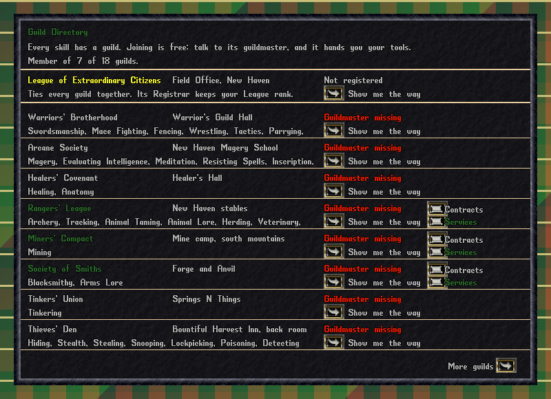
ClusterFGuildSystem.cs:879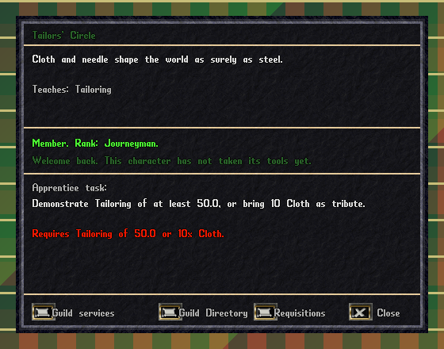
ClusterFGuildSystem.cs:1052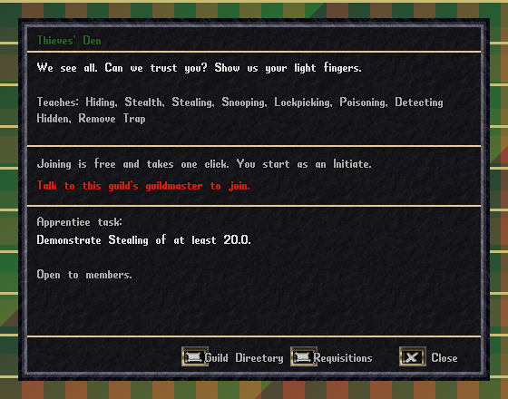
ClusterFGuildSystem.cs:1052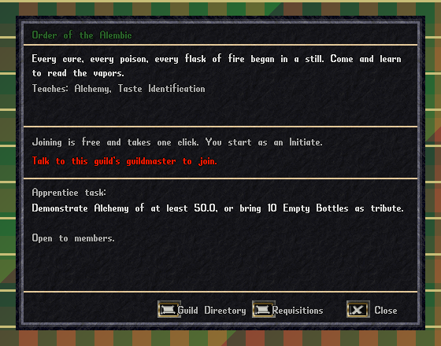
ClusterFGuildSystem.cs:1052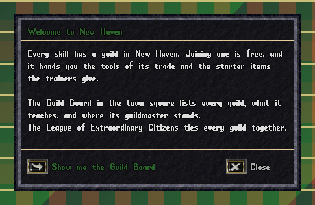
ClusterFGuildStarterPath.cs:795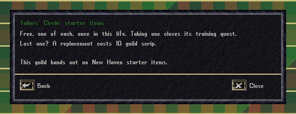
ClusterFGuildStarterPath.cs:845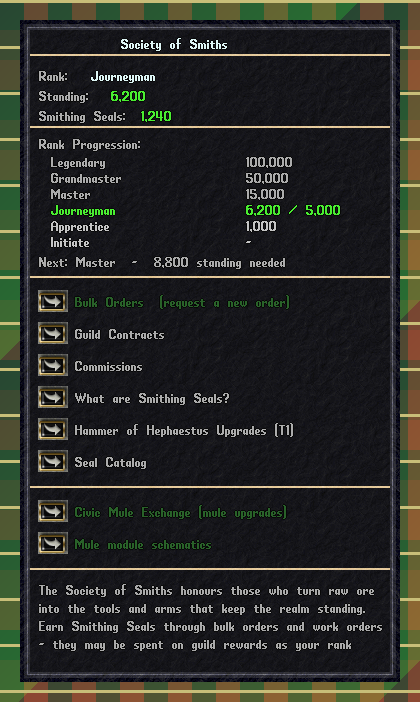
SmithGuildmasterGump.cs:53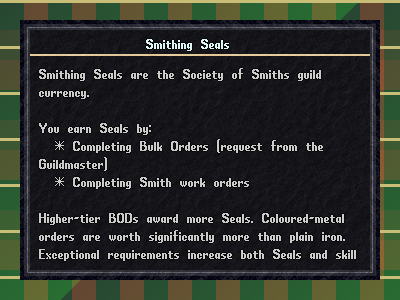
SmithGuildmasterGump.cs:371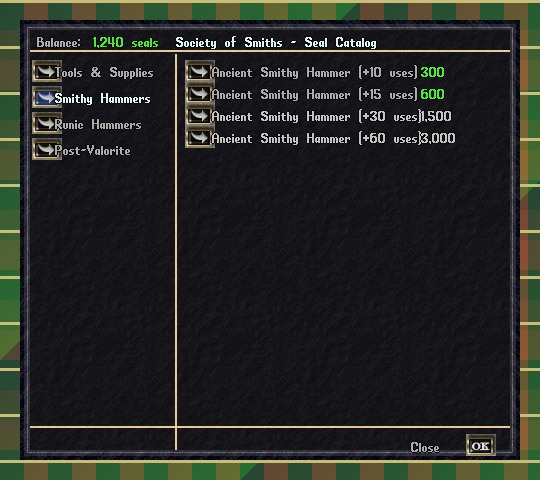
SmithSealCatalogGump.cs:138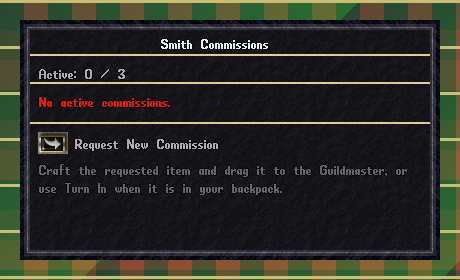
SmithCommissionGump.cs:40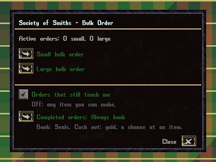
SmithBulkOrderChoiceGump.cs:41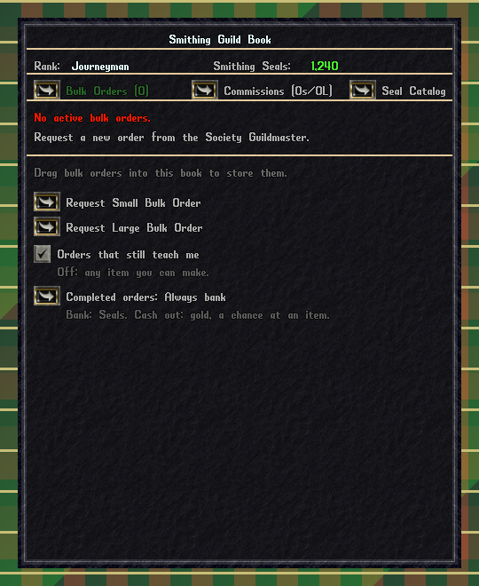
SmithGuildBook.cs:162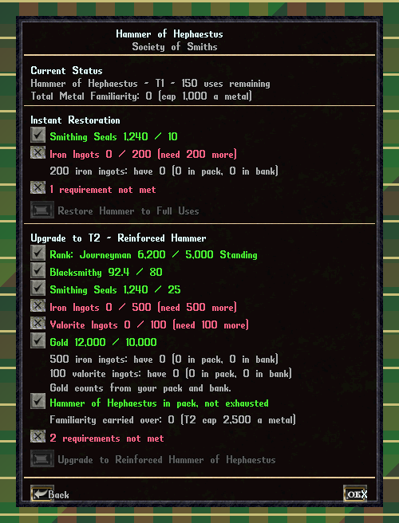
HammerOfHephaestus.cs:1118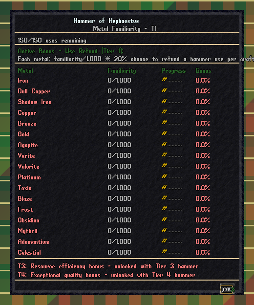
HammerOfHephaestus.cs:965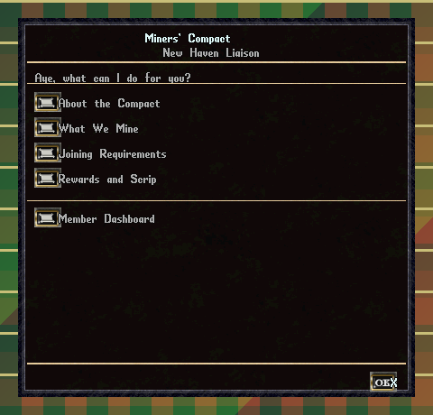
MinersCompactLiaisonGump.cs:102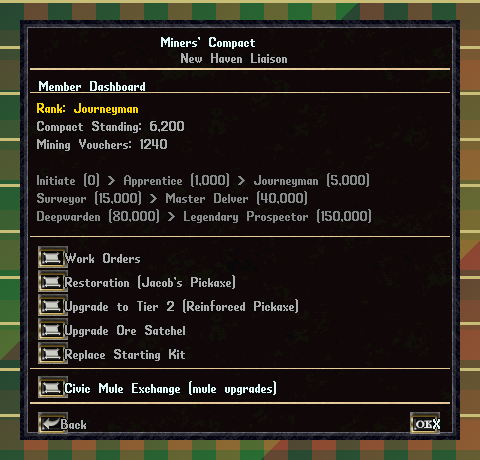
MinersCompactLiaisonGump.cs:102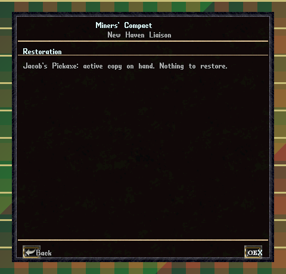
MinersCompactLiaisonGump.cs:102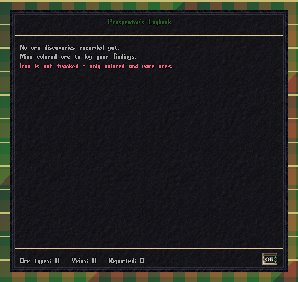
ProspectorsLogbookGump.cs:70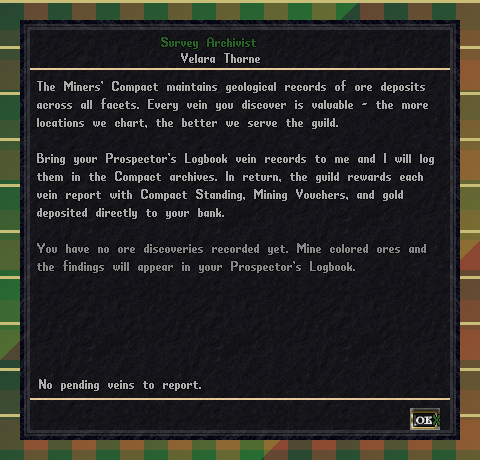
SurveyArchivistGump.cs:66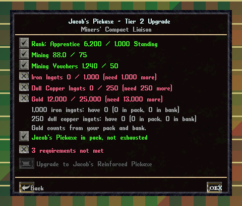
JacobsReinforcedPickaxe.cs:223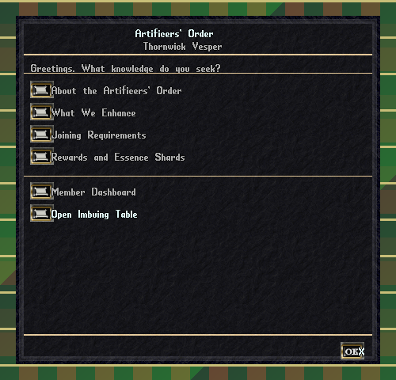
ArtificersGuildmasterGump.cs:33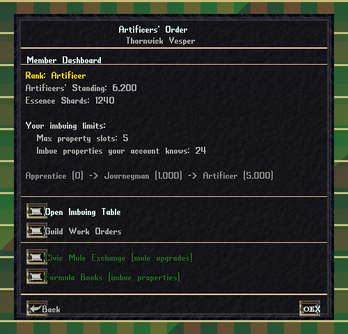
ArtificersGuildmasterGump.cs:33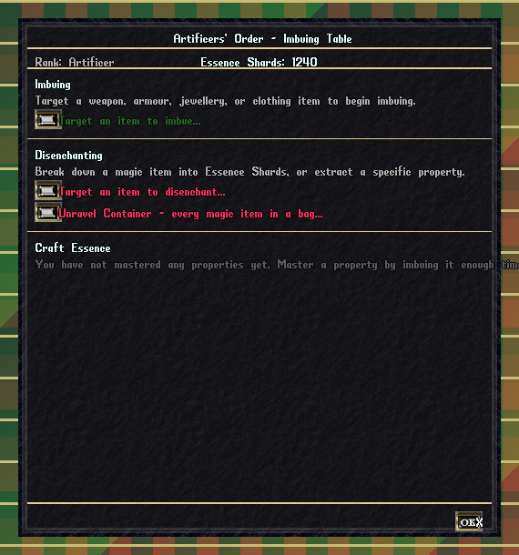
ArtificersImbueGump.cs:878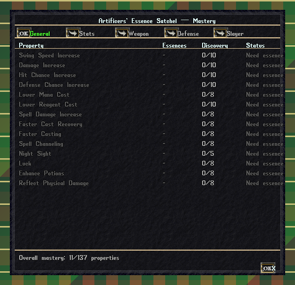
ArtificersSatchel.cs:173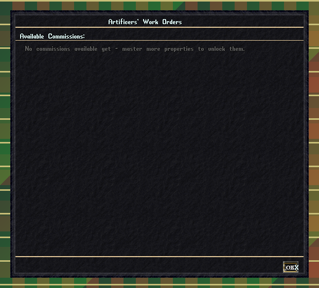
ArtificerWorkOrderSystem.cs:532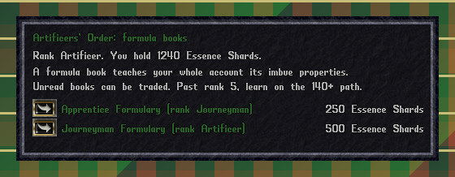
Imbuing/ImbueFormulaBooks.cs:176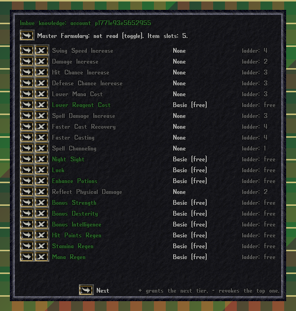
Imbuing/ImbueFormulaBooks.cs:241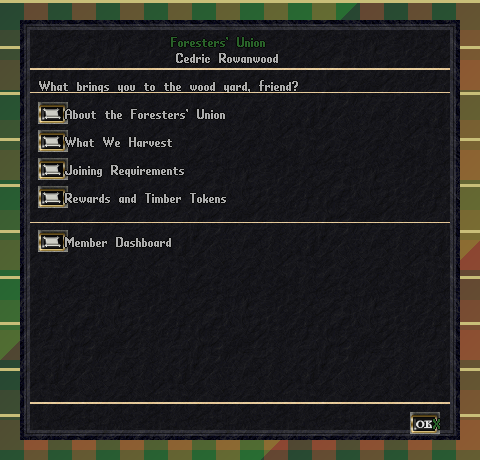
ForestersGuildmasterGump.cs:34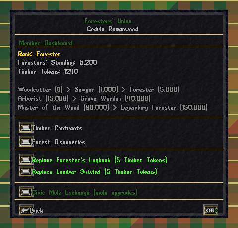
ForestersGuildmasterGump.cs:34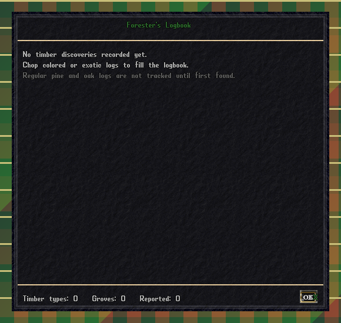
ForestersLogbookGump.cs:85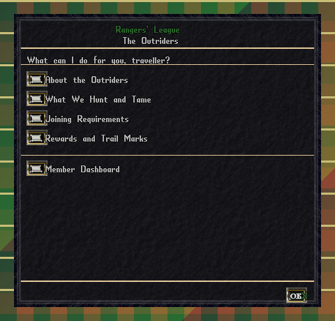
OutridersGuildmasterGump.cs:34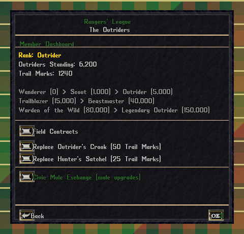
OutridersGuildmasterGump.cs:34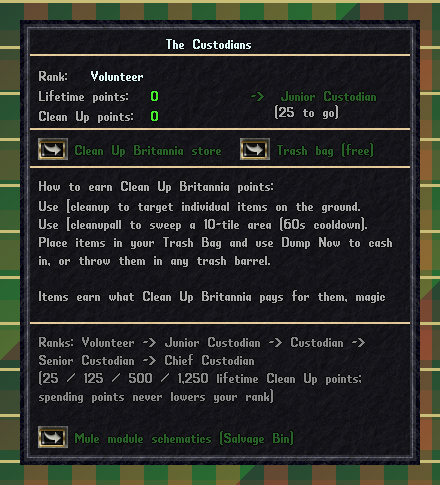
SanitationWardenGump.cs:47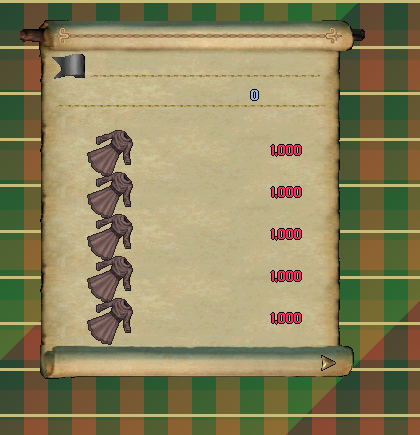
Services/CleanUpBritannia/CleanUpBritanniaRewards.cs:308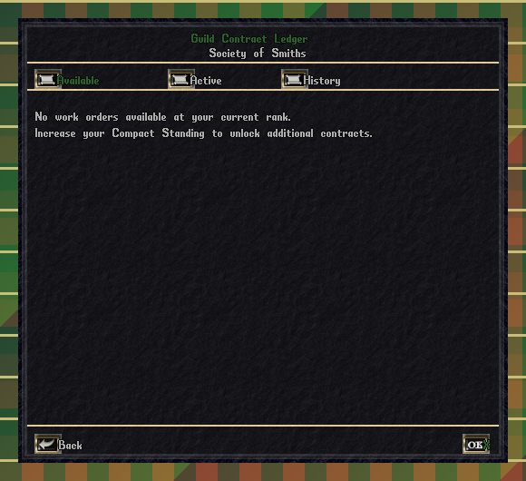
GuildContractLedgerGump.cs:45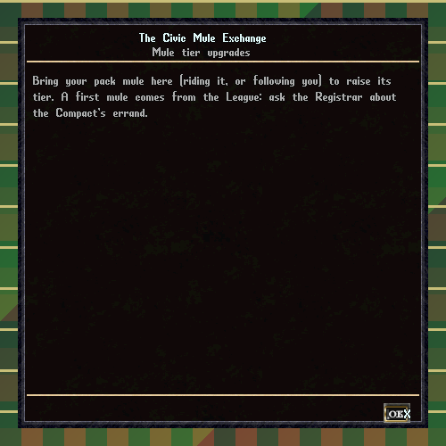
CrossGuildExchangeGump.cs:31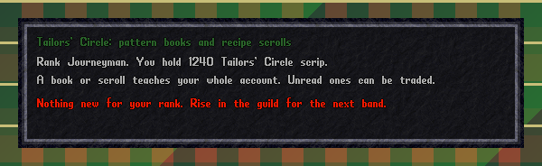
Engines/Craft/GuildRecipeShopGump.cs:130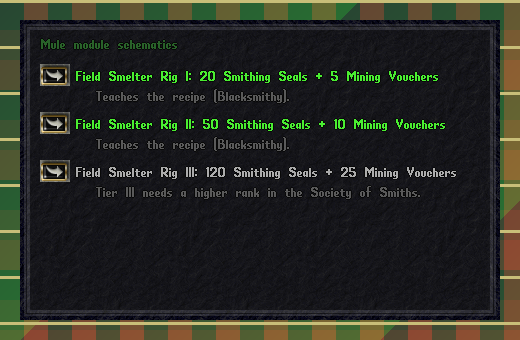
Mobiles/Mule/MuleModuleGumps.cs:575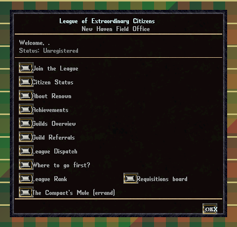
LeagueRegistrarGump.cs:52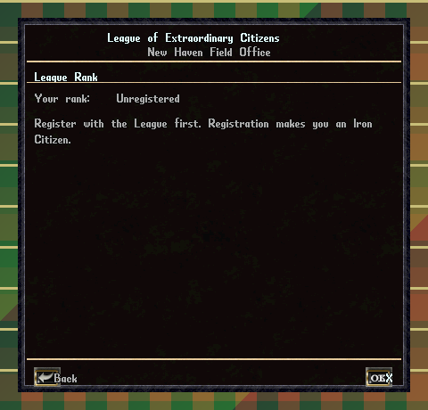
LeagueRegistrarGump.cs:52